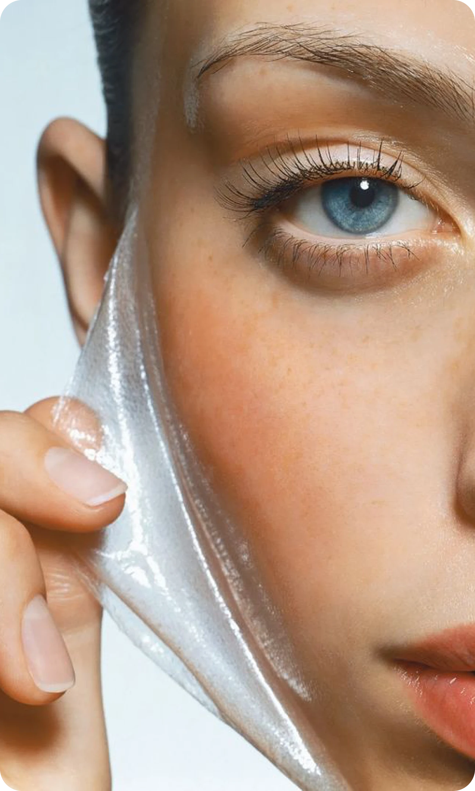
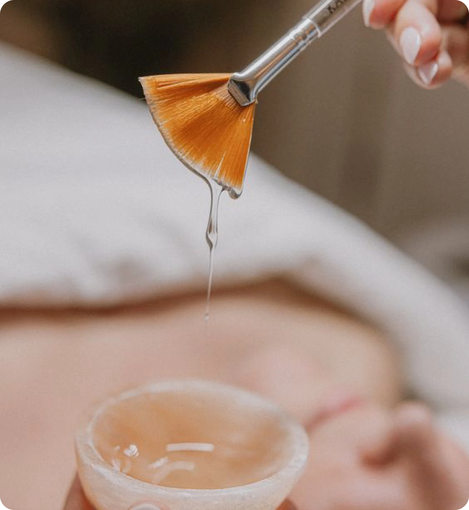

18 марта 2024
средства
Пилинги являются одним из ключевых продуктов в уходовой косметике, предназначенных для эффективного очищения и улучшения состояния кожи. Они относятся к отшелушивающим средствам. Сегодня расскажем подробнее про действие пилингов и дадим рекомендации по их применению.
Описание
Пилинги содержат активные ингредиенты, которые помогают удалить ороговевшие клетки, стимулируют обновление кожи и улучшают ее текстуру и цвет. Их действие на кожу основано на мягком отшелушивании верхнего слоя кожи, что способствует улучшению кровообращения, уменьшению пор, выравниванию тонуса и повышению упругости кожи. После применения пилинга кожа становится более гладкой, свежей и сияющей.
Пилинги применяются для различных целей, включая борьбу с пигментацией, уменьшение морщин, увлажнение кожи, борьбу с акне и улучшение текстуры кожи. В зависимости от типа кожи и ее потребностей, выбираются различные виды пилингов: механические, химические или ферментационные.
 
Применение
Пилинги различаются по составам. Если в составе средства присутствуют кислоты в больших концентрациях, мы не рекомендуем использовать такой пилинг чаще 1 раза в неделю. Если же это пилинг-маска с добавлением небольшого количества энзимов или кислот, то частоту использования можно увеличить до 2-3 раз в неделю.
Пилинг необходимо наносить на тщательно очищенную кожу лица. После нанесения рекомендуем смывать средство теплой водой.
Для сухой кожи рекомендуется использовать мягкие пилинги на основе нежных отшелушивающих частиц или фруктовых кислот, чтобы избежать пересушивания. Обладателям сухой кожи лучше не использовать пилинги чаще 2х раз в неделю
Для жирной кожи подойдут пилинги с салициловой кислотой или гликолевой кислотой, которые помогут контролировать выработку себума.
Обладателям чувствительной кожи мы не рекомендуем выбирать пилинги с большой концентрацией кислот в составе. Частота использования отшелушивающего средства — не более 1 раза в неделю.